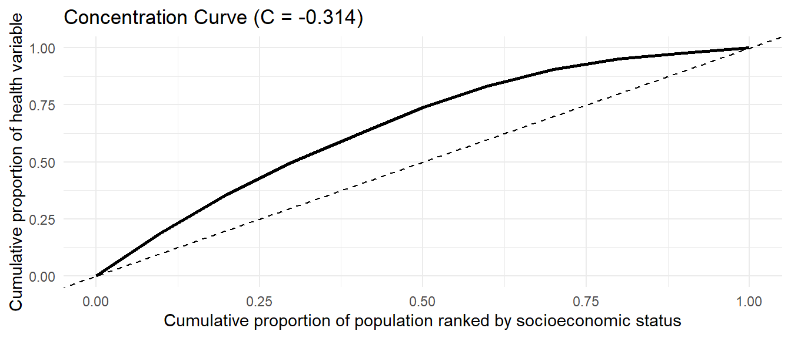
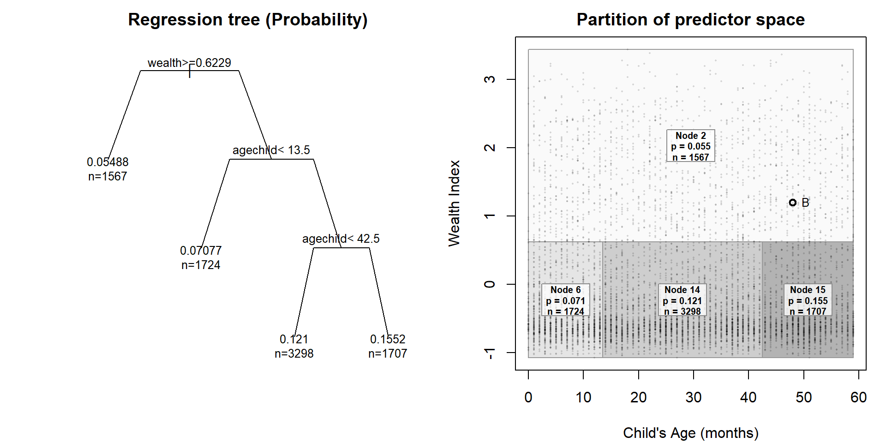

Tree Based Decomposition of Health Inequalities
Introduction
Child survival has improved since 1990, but the gains have not closed the gap between countries or between groups of children. Globally, under-five mortality fell from 93 deaths per 1,000 live births in 1990 to 37.7 in 2019, and the number of under-five deaths fell from 12.5 million to 5.2 million [@sharrow2022_under5_mortality]. Reduction in under-5 mortality are linked to improved child health services, greater access to care, and lower levels of extreme poverty [@jones2003_child_survival]. The burden, however, is still concentrated in poorer settings. The latest [ @who_gho_under5_mortality_indicator] estimates show that sub-Saharan Africa had the highest regional under-five mortality rate, 67 per 1000 live births, and almost half of all under-five deaths occurred in five countries, including the Democratic Republic of the Congo [@sharrow2022_under5_mortality]. Within these countries, a child’s risk also depends on household poverty, proximity to health services, access to clean water, sanitation, and health information, and place of residence. Even a better-off household may remain at risk when local services are weak or far away. For this reason, studying socioeconomic inequality in under-five mortality helps show which children are still exposed to risks that can be prevented.
When statistical methods such as regression analysis are used in policy making, a national estimate may show that poorer children have higher mortality rates. However, it can hide subgroup differences linked to household conditions, province(administrative areas), maternal background, or demographic characteristics. Identifying risk groups matters because interventions are organised in real settings, through health facilities, communities, provinces(administrative areas), and programme catchment areas. A more detailed inequality analysis can therefore identify the groups that should receive attention and indicate where a single public health response may not be sufficient.
Health inequality analysis commonly begins by ordering individuals or households according to socioeconomic position and then examining how the health outcome is distributed along that ordering. The concentration index provides a standard way to summarise this relationship [@wagstaff2003decomposing]. Classical decomposition methods then use a regression model to estimate how different determinants contribute to the observed inequality in the outcome [@wagstaff2003decomposing; @speybroeck2010decomposing]. This is useful because it gives a direct additive breakdown. At the same time, the interpretation depends on the average effects from the fitted model. An important structure can therefore be missed if mortality risk varies across subgroups, if determinants act jointly, or if the relationship differs above and below certain thresholds.
In this thesis, we develop a tree-based way of decomposing socioeconomic inequality in health. The method still uses the concentration index, but places it inside the splitting process of a tree. A typical decision tree chooses a split because it improves predictive performance. Here, the split is chosen because it separates the data into groups where socioeconomic inequality in the outcome is lower within each group. The fitted tree then produces decision rules that describe population groups. These rules are easier to discuss in public health work than regression coefficients alone, because they point to groups that policy makers, programme teams, and public health planners can recognise and act on.
At each node, the tree searches across candidate variables and admissible split points, then selects the variable and split pair that gives the largest reduction in weighted within-node concentration-index impurity. The fitted tree is stored using the partykit tree representation for plotting and traversal [@hothorn2015partykit], but the tree-growing rule is not the conditional-inference variable-selection rule. We then apply the same split logic in a random forest setting. The forest is useful because it averages many inequality-oriented trees and is less dependent on any single early split, although this also makes the fitted structure less transparent. To recover a readable summary of the forest, we fit a surrogate tree to the forest predictions. This follows the idea of using a representative tree to summarise the main behaviour of an ensemble in a form that can be read as decision rules [@banerjee2012representative_trees]. Finally, we use SHAP values to express the fitted tree-based predictions as additive feature contributions [@lundberg2017unified; @lundberg2018tree]. The surrogate tree summarises the main subgroup structure, while SHAP provides contributions at the level of the determinants.
For the analysis, we use child-level data from the Democratic Republic of the Congo DHS phase 8 survey [@dhs_drc_2023_24_dataset]. Under-five mortality is treated as the outcome, and the DHS household wealth index serves as the socioeconomic ranking variable. This is appropriate for the DRC setting, where DHS-based research has shown that poverty and education are associated with access to health insurance [@tsala_dimbuene2022_drc_health_insurance]. The splitting variables cover characteristics of the child, the mother, the household, occupation, residence, and province.
The thesis is organised around four objectives. The first is to define the concentration index and demonstrate how it can serve as a splitting criterion in recursive partitioning. The second is to apply concentration-index trees and forests to under-five mortality using the DRC DHS data. The third is to examine whether different concentration-based impurity measures yield distinct split choices. The fourth is to use SHAP-based contributions to decompose the concentration index of the fitted tree-based predictions.
Methodology
1. Data, Outcome, and Determinants
This thesis uses child-level data from the Democratic Republic of the Congo DHS Phase 8 survey [@dhs_drc_2023_24_dataset]. The analysis includes children with complete information on the outcome, household wealth score, survey weight, and covariates used in the tree models. DHS sampling weights are rescaled and used as non-negative case weights in the inequality-tree fitting procedure.
The outcome is under-five mortality, a binary adverse outcome:
\[ Y_i = \begin{cases} 1, & \text{if child } i \text{ died before 60 months of age},\\ 0, & \text{otherwise}. \end{cases} \]
The coding uses the child’s survival status and age at death. Children who died before 60 months receive a value of one. Since the outcome is adverse, higher fitted values correspond to higher mortality risk.
Socioeconomic position is measured using the DHS household wealth index. The continuous wealth score is used to rank children from poorer to richer households when computing the concentration index. Wealth defines the socioeconomic scale along which mortality inequality is measured.
The independent variables describe the child, mother, household, occupation, residence, and province. They include child sex, birth-order and birth-interval group, mother’s age group, rural residence, mother’s and partner’s education, mother’s and partner’s occupation, whether either parent belongs to a low-skill or non-working occupational group, and province. Categorical variables are recoded into interpretable groups before the tree is fitted.
2. Measuring Socioeconomic Inequality in Health
This methodology aims to develop a decomposition of health inequalities using tree methods. We will first introduce the concepts of health inequality decomposition, then move to tree-based methods.
2.1 The Concentration Index
The concentration index measures socioeconomic-related inequality in a health variable. It uses the concentration curve, which plots the cumulative proportion of the health variable on the vertical axis against the cumulative proportion of the population on the horizontal axis. Individuals are ordered from the most disadvantaged to the most advantaged before constructing the curve [@wagstaff2003decomposing]. When the curve follows the 45-degree line, the health variable has the same distribution across the socioeconomic ranking.
\(y_i\) denotes the health variable for individual \(i\), and let \(R_i\) denote that individual’s fractional socioeconomic rank, ordered from poorest to richest. For an unweighted sample, the fractional rank is
\[ R_i = \frac{i - 0.5}{n}, \]
where \(i = 1, \dots, n\) denotes the individual’s position in the socioeconomic ranking. If \(\mu\) is the mean of \(y\), the concentration index is
\[ C = \frac{2}{n\mu}\sum_{i=1}^{n} y_i R_i - 1. \]
A value of zero indicates no socioeconomic-related inequality in the health variable. A negative value indicates that the variable is concentrated among poorer individuals, while a positive value indicates that it is concentrated among richer individuals. The sign, therefore, depends on the meaning of the health variable. For adverse outcomes such as mortality, illness, or malnutrition, a negative concentration index indicates inequality that disadvantages people with low incomes.
In the simulated example in Figure 1, we simulate the health outcome to be concentrated among poorer individuals, so the curve lies above the 45-degree line and the concentration index is negative (-0.314).
2.2 Decomposing Socioeconomic Inequality in Health
Inequality is measured in the observed health outcome \(y_i\), but interventions usually work through the factors that affect health rather than through the outcome itself. Decomposition helps relate inequality in \(y_i\) to the observed social determinants that may explain it.
Let the health outcome for the individual \(i\) be defined.
\[ y_i = f(x_i) + \varepsilon_i, \]
where \(x_i\) denotes the observed determinants and \(\varepsilon_i\) represents the part that the model does not explain. Let \(\hat{y}_i = f(x_i)\) be the fitted value, and use this fitted model to decompose the concentration index. \[ C = \frac{2}{n\mu}\sum_{i=1}^{n} \hat{y}_i R_i - 1, \]
where:
\(\hat{y}_i\) is the estimated health outcome for an individual \(i\) based on the observed determinants \(x_i\). [@wagstaff2003decomposing] showed that the decomposition of the concentration index results in the following expressions: \[ C = \sum_k \left( \frac{\beta_k \bar{x}_k}{\mu} \right) C_k + \frac{GC_\varepsilon}{\mu}. \]
In this expression, \(C\) is the concentration index of the health outcome, \(\mu\) is the mean of that outcome, \(\beta_k\) is the regression coefficient for determinant \(x_k\), \(\bar{x}_k\) is the mean of \(x_k\), and \(C_k\) is the concentration index of that determinant. The last term, \(GC_\varepsilon\), is the generalised concentration index of the regression residuals. From this, we can infer that the contribution to the determinant \(x_k\) is
\[ \text{Contribution of } x_k = \left( \frac{\beta_k \bar{x}_k}{\mu} \right) C_k. \]
The concentration index(\(C_k\)) for determinant \(x_k\) can be written as follows \[ C_k = \frac{2}{n\bar{x}_k}\sum_{i=1}^{n}x_{ki}R_i - 1. \]
where \(x_{ki}\) is the value of determinant \(x_k\) for the individual \(i\), \(\bar{x}_k\) is the mean of determinant \(x_k\), and \(R_i\) is the fractional socioeconomic rank of individual \(i\).
2.3 Percentage Contributions
In the concentration index results, the percentage contribution for each determinant is usually reported. For determinant \(k\), the total contribution is
\[ \text{AC}_k = \left(\frac{\beta_k \bar{x}_k}{\mu}\right)C_k. \]
The percentage contribution is
\[ \text{PC}_k = 100 \times \frac{\text{AC}_k}{C}. \]
This is a signed share of total socioeconomic inequality. In our analysis of under-5 mortality, a positive value means that the determinant contributes in the same direction as the observed mortality inequality (reinforces the observed pattern). A negative value means that it offsets part of that inequality. A percentage can exceed 100 per cent when other determinants, or the residual term, contribute in the opposite direction.
2.4 Concentration Index Variants and a Level-Dependent Alternative
When the outcome is bounded, for instance, in our case, a binary outcome, [@wagstaff2005bounds] showed that the lower and upper bounds depend on the outcome’s mean, so the feasible range narrows as the mean increases. That means a change in the index can reflect not only changes in socioeconomic inequality but also changes in the average level of the outcome. [@erreygers2009correcting] shows that this issue goes beyond the binary case. In general, once a health variable has a finite upper bound or a positive lower bound, the bounds of the concentration index vary with the mean. For this reason, several related measures have been introduced, rather than relying solely on the standard index. In this thesis, the rank-dependent measures are the standard concentration index (\(CI\)), the generalised concentration index (\(CIg\)), and the corrected concentration index for bounded outcomes (\(CIc\)). A level-dependent alternative, denoted \(L\), is also considered, which is important when a socioeconomic variable has a defensible level interpretation [@erreygers2017socioeconomic], for example, income.
The standard concentration index is
\[ CI_y = \frac{2}{\mu_y}\operatorname{cov}_w(y_i, R_i), \]
where \(y_i\) is the health outcome, \(R_i\) is the fractional socioeconomic rank, and \(\mu_y\) is the mean of the outcome.
The generalised concentration index is
\[ CIg_y = 2\operatorname{cov}_w(y_i, R_i) = \mu_y CI_y. \]
For bounded outcomes, the corrected concentration index takes the form.
\[ CIc_y = \frac{4}{b-a}CIg_y = \frac{8}{b-a}\operatorname{cov}_w(y_i, R_i), \]
where \(a\) and \(b\) are the lower and upper bounds of the outcome. For a binary outcome, where \(a=0\) and \(b=1\), this reduces to
\[ CIc_y = 4\mu_y CI_y. \]
The level-dependent index \(L\) uses observed socioeconomic levels directly rather than converting them into ranks:
\[ L_y = \sum_{i=1}^{n} p_i \left(\frac{s_i-\mu_s}{\mu_s}\right)y_i, \qquad p_i = \frac{w_i}{\sum_{j=1}^{n} w_j}, \qquad \mu_s = \sum_{i=1}^{n} p_i s_i. \]
\(s_i\) is the observed socioeconomic level, \(y_i\) is the health outcome, and \(w_i\) is the case weight. Unlike \(CI\), \(CIg\), and \(CIc\), the \(L\) index does not replace \(s_i\) with a fractional rank.
The DHS wealth variable used in this thesis is the continuous wealth-index factor score, \(v191\). It is not observed income, consumption, or expenditure, but a PCA-derived composite measure of household living standard based on asset ownership, housing materials, water access, sanitation facilities, and related household amenities [@dhsprogram_wealth_index_construction]. For the \(L\) index [@erreygers2017socioeconomic], state that the level-dependent construction is acceptable only when the socioeconomic variable has ratio-scale properties; since the wealth index is a PCA score rather than income or consumption, results based on \(L\) should therefore be interpreted with caution. When the concentration indeces are used as impurity measures, the tree may not form the same subgroups under all concentration indices. A split chosen under \(CI\) may differ from one chosen under \(CIg\), \(CIc\), or \(L\), because each index defines inequality in a slightly different way.
2.5 Limits of the Linear Framework
The standard decomposition uses a generalised linear model, \(y_i = \beta_0 + \sum_k \beta_k x_{ki} + \varepsilon_i\), where \(\beta_0\) is the intercept, \(\beta_k\) is the coefficient associated with determinant \(x_k\), \(x_{ki}\) is the value of determinant \(k\) for individual \(i\), and \(\varepsilon_i\) is the error term.
In the regression-based decomposition framework, each determinant contributes through a fitted regression coefficient [@wagstaff2003decomposing; @speybroeck2010decomposing]. This makes the decomposition clear, because the contribution of each variable can be written as part of an additive summary. The limitation is that the coefficient is an estimated conditional average effect over the population. The effect of a determinant may differ by household conditions, province, maternal background, or access to services. Some effects may also appear only after a threshold is crossed. This is why this thesis next turns to tree-based methods, which can represent thresholds and interactions more directly without specifying this before fitting a model.
3. Tree-Based Models for Inequality Analysis
3.1 Recursive Partitioning and Decision Trees
A decision tree does not fit a single global equation to all observations per determinant. It divides the data into subgroups using a sequence of rules based on the predictors [@hastie2009elements]. Each path through the tree leads to a terminal node, or leaf, which represents a subgroup of observations with similar values on the variables used for splitting.
In a regression tree, the fitted value for a leaf is the mean outcome in that subgroup. In a classification tree, it is usually a class label or an estimated class probability. The model is therefore piecewise: it gives different summaries for different parts of the covariate space. If the terminal regions are denoted by \(R_1,\dots,R_M\), the fitted regression tree can be written as
\[ \hat{f}(x) = \sum_{m=1}^{M} c_m I(x \in R_m), \]
where \(c_m\) is the fitted value assigned to region \(R_m\) and \(I(x \in R_m)\) equals 1 if observation \(x\) falls in that region and 0 otherwise. Below Figure 2 is an illustration drawn from the Democratic Republic of the Congo (DRC) household survey data. We fit a classification tree to predict the probability of under-five mortality using two continuous predictors: the child’s age in months and the household wealth index. The left panel shows the tree itself. The right panel shows the same fitted tree as a partition of the two-dimensional predictor space. Each rectangle corresponds to one terminal node, and all observations inside the same rectangle receive the same fitted probability of mortality.

From the example above Figure 2, we can see the main difference from the regression decomposition. A linear model assigns each determinant a single coefficient, and we must specify interactions beforehand. The same conditional average effect(coefficient) is used for the whole sample. A tree first splits the data into subgroups and then assigns fitted values to each subgroup. The relationship between the outcome and the determinants can therefore change from one part of the population to another. A decision tree thus becomes useful when the pattern depends on thresholds, interactions, or subgroup-specific effects.
3.2 Recursive Partitioning for Inequality Analysis
In a usual CART(Classification and Regression Trees), splits are chosen mainly for prediction. A regression tree searches for splits that reduce within-node outcome variation, while a classification tree searches for splits that improve class separation [@hastie2009elements].
In this thesis, the split target is changed. The tree is used to form subgroups where under-five mortality is less concentrated by socioeconomic position. The outcome level in each subgroup is still reported, but it is not the quantity used to choose the split. A split is preferred when it reduces the within-node concentration index of under-five mortality.
3.3 Concentration-Index-Based Recursive Partitioning
To implement recursive partitioning using concentration indices, we developed a greedy concentration-index tree. The procedure follows the CART method of recursive partitioning but replaces the prediction impurity with a concentration-index impurity. The gain function selects both the variable and the split point. At node \(t\), the selected split is
\[ (j^*, s^*) = \arg\max_{j \in \mathcal{J}_t,\; s \in \mathcal{S}_{jt}} G_m(j, s, t), \]
where \(m\) is one of \(CI\), \(CIg\), or \(CIc\), \(\mathcal{J}_t\) is the set of candidate variables at node \(t\), and \(\mathcal{S}_{jt}\) is the set of admissible splits for variable \(j\). The implementation uses partykit tree representation [@hothorn2015partykit]. However, it replaces the conditional-inference tree-growing engine with a custom recursive builder whose split rule directly maximises concentration-index gain over candidate variables and split points.
3.3.1 Weighted Within-Node Rank Function
The concentration index requires individuals to be ranked from poorest to richest. Because the tree is recursive, this ranking must be recomputed at each node. We define a weighted within-node rank function. For individual \(i\) belonging to node \(t\), let the weighted fractional rank be
\[ R_{i|t} = \frac{1}{W_t} \left( \sum_{j \in t: S_j < S_i} w_j + \frac{w_i}{2} \right), \]
where \(S_i\) denotes the socioeconomic ranking value of individual \(i\), and \(S_j\) denotes the corresponding value for individual \(j\) in the same node. The terms \(w_i\) and \(w_j\) are their survey weights, and \(W_t = \sum_{i \in t} w_i\) is the total survey weight in node \(t\).
In this formula, the first term counts the survey weight of children in the same node who are poorer than child \(i\), and adding half of \(w_i\) places the child at the midpoint of its own weighted position in the ordered list. The rank is then divided by the total node weight, so \(R_{i|t}\) lies between 0 and 1. Since this calculation is repeated separately inside each node, the wealth rank used by the concentration index is local to the subgroup being split, not to the full DHS sample.
3.3.2 Node Impurity Based on the Concentration Index
After we define within-node rank, the tree needs a criterion for comparing possible splits. In ordinary CART, node impurity is based on the homogeneity of the outcomes. A regression tree favours splits that reduce within-node variance or residual sum of squares, while a classification tree may use classification error, Gini impurity, or entropy [@hastie2009elements]. A good split should leave the two child nodes less mixed in the outcome than the parent node. In this thesis, the same node impurity logic is used, but the impurity measure is replaced by one based on the concentration index.
In the present method, the aim is not to make nodes homogeneous in their outcome level, but to make them more homogeneous with respect to socioeconomic inequality in the outcome. We therefore define the impurity of a node as the absolute concentration index within that node. For node \(t\), let
\[ CI_t = \frac{2}{W_t \mu_t} \sum_{i \in t} w_i Y_i R_{i|t} - 1 \]
where
\[ \mu_t = \frac{1}{W_t}\sum_{i \in t} w_i Y_i \]
is the weighted mean of the health outcome in node \(t\). This may be written in weighted covariance form as
\[ CI_t = \frac{2}{\mu_t}\operatorname{cov}_w(Y_i, R_{i|t}). \]
The quantity \(CI_t\) measures whether the health outcome is concentrated among poorer or richer individuals within the node. Values close to zero indicate little socioeconomic inequality within the subgroup, while larger absolute values indicate stronger inequality. Because the split criterion is intended to measure the strength of inequality remaining within a node, regardless of whether it is pro-poor or pro-rich, we use the absolute value as the impurity measure:
\[ I(t) = |CI_t|. \]
3.3.3 Split Gain Function
At this stage, the tree needs an objective function: a rule for deciding which split is best. At each node, the objective searches for candidate splits and keeps the one that yields the largest improvement under the chosen criterion.
In this thesis, the same search over candidate splits used in classification and regression trees (CART)is retained, but the objective function is changed. The split is not selected because it gives the best prediction of under-five mortality in the usual trees. It is selected because it gives the largest reduction in socioeconomic inequality in under-five mortality.
We therefore define node impurity as the absolute value of the chosen concentration-index measure within that node. A split is preferred when the two child nodes contain less within-node socioeconomic inequality in mortality than the parent node. For a candidate variable-split pair \((j,s)\) that divides node \(t\) into a left child node \(t_L(j,s)\) and a right child node \(t_R(j,s)\), the weighted reduction in impurity is defined as
\[ G_m(j, s, t) = I_m(t) - \left( \frac{W_{t_L(j,s)}}{W_t} I_m(t_L(j,s)) + \frac{W_{t_R(j,s)}}{W_t} I_m(t_R(j,s)) \right). \]
\(I_m(t)\) is the concentration-index impurity in the parent node, while \(I_m(t_L(j,s))\) and \(I_m(t_R(j,s))\) are the impurities in the two child nodes created by split \((j,s)\).
In this implementation, the gain from a split is the reduction in weighted absolute concentration-index impurity from the parent node to the two child nodes. If a split sends observations into two groups where the weighted child concentration indices are closer to zero than the parent value, the split receives a positive gain. The tree, therefore, grows by selecting variables that reduce within-node socioeconomic inequality, rather than by selecting variables that minimise prediction error. After the split, the resulting child nodes can be compared by their outcome levels and remaining inequality. Since \(I_m(t)\) is fixed for a given parent node, maximising \(G_m(j,s,t)\) is the same as choosing the variable-split pair that leaves the least weighted inequality in the child nodes. The selected split is
\[ (j^*, s^*) = \arg\max_{j \in \mathcal{J}_t,\; s \in \mathcal{S}_{jt}} G_m(j, s, t). \]
The selected split is the candidate pair \((j,s)\) with the largest admissible gain.
3.3.4 Split behaviour under alternative concentration-based impurity measures
The impurity measure is not separate from the gain function. It enters directly into the definition of the gain. Once an impurity measure has been chosen, the gain function uses that measure to compare and rank all admissible candidate splits at the current node.
For a candidate split \((j,s)\) at node \(t\), the gain under impurity measure \(m\) is
\[ G_m(j,s,t) = I_m(t) - \left[ p_L I_m(t_L) + p_R I_m(t_R) \right], \]
where \(I_m(t)\) is the impurity of the parent node, and \(I_m(t_L)\) and \(I_m(t_R)\) are the impurities of the left and right child nodes, the terms \(p_L\) and \(p_R\) weight the child-node impurities by their survey-weighted node sizes.
At a fixed parent node, \(I_m(t)\) is the same for all candidate splits evaluated under the same impurity measure. Therefore, maximising the gain is equivalent to minimising the weighted impurity left in the child nodes:
\[ p_L I_m(t_L) + p_R I_m(t_R). \]
Thus, the impurity measure affects the gain function, which in turn ranks candidate splits. The concentration indices here are impurity measures that are intended to be reduced. Under the standard concentration index rule, the child-node impurity is relative to the child-node mean:
\[ p_L \frac{A_{t_L}}{\mu_{t_L}} + p_R \frac{A_{t_R}}{\mu_{t_R}}. \]
Under the generalised concentration index rule, the criterion remains on the absolute scale:
\[ p_L A_{t_L} + p_R A_{t_R}. \]
Because the child-node means \(\mu_{t_L}\) and \(\mu_{t_R}\) can vary across candidate splits, the \(CI\) and \(CIg\) rules may rank the same splits differently. The corrected concentration index \(CIc\) is different in scale but not in ordering when the outcome range \([a,b]\) is fixed, since
\[ G_{CIc}(j,s,t) = \frac{4}{b-a}G_{CIg}(j,s,t). \]
\(\frac{4}{b-a}\) is positive and independent of the candidate split. Therefore, \(CIc\) and \(CIg\) may produce the same split ranking, although a fixed minimum-gain threshold would need to be rescaled if the stopping rule uses the raw gain value.
In short, the impurity measure determines what the gain function measures and the scale, and the gain function determines which split is selected.
3.3.5 Split Search for Numeric and Categorical Predictors
At each node, the algorithm searches across the candidate predictors and their admissible binary partitions. The same gain function is used for both numeric and categorical predictors, but the candidate splits are constructed differently. For a numeric predictor \(X_k\), the values observed in node \(t\) are sorted, and possible cutpoints are placed only between distinct adjacent values. For two adjacent ordered values, \(x_{(r)}\) and \(x_{(r+1)}\), the candidate cutpoint is placed halfway between them:
\[ s = \frac{x_{(r)} + x_{(r+1)}}{2}. \]
This gives the binary rule.
\[ X_k \leq s \qquad \text{versus} \qquad X_k > s. \]
Only cutpoints that leave enough survey weight in both child nodes are retained. For each numeric predictor, the best admissible cutpoint is the one with the largest concentration-index gain:
\[ s_k^* = \arg\max_s G_m(k,s,t). \]
For a categorical predictor \(X_k\), the levels present in node \(t\) are first ordered by their weighted mean outcome. If these ordered levels are \(l_1,\dots,l_J\), the candidate splits are formed cumulatively:
\[ \{l_1\} \quad \text{versus} \quad \{l_2,\dots,l_J\}, \]
\[ \{l_1,l_2\} \quad \text{versus} \quad \{l_3,\dots,l_J\}, \]
up to
\[ \{l_1,\dots,l_{J-1}\} \quad \text{versus} \quad \{l_J\}. \]
The eligible splits are subject to the stopping rules discussed in the next section.
3.3.6 Stopping Rules
A node is split only if it passes the node level checks, has at least one admissible candidate split, and the best candidate gives enough improvement. First, node \(t\) is searched only when its depth is below the maximum tree depth (maxdepth), and its weighted sample size is at least the minimum weighted parent-node size (minsplit):
\[ d_t < d_{\max} \quad \text{and} \quad W_t \geq W_{\mathrm{minsplit}}. \]
If either condition fails, the node is terminal. For a node that passes maxdepth and minsplit checks, each candidate split \((j,s)\) must create two child nodes that are large enough. A split is admissible only if both children satisfy the minimum weighted child-node size (minbucket),
\[ W_{t_L(j,s)} \geq W_{\mathrm{minbucket}}, \quad W_{t_R(j,s)} \geq W_{\mathrm{minbucket}}, \]
and the minimum child-node weight proportion (minprob),
\[ \frac{W_{t_L(j,s)}}{W_t} \geq p_{\min}, \quad \frac{W_{t_R(j,s)}}{W_t} \geq p_{\min}. \]
These two rules remove unsuitable candidate splits before the gain is compared. A node becomes terminal if no candidate split remains after this filtering. Among the admissible splits, the selected split must have a finite gain and must exceed the minimum absolute gain (min_gain):
\[ G_m(j^*,s^*,t) > G_{\mathrm{min}}. \]
The algorithm also checks the minimum relative gain (min_relative_gain). For split \((j,s)\), this is defined as
\[ RG_m(j,s,t) = \frac{G_m(j,s,t)}{|I_m(t)|}. \]
This expresses the gain as a share of the impurity in the parent node. It helps avoid splits that have a positive raw gain but reduce only a very small part of the parent-node impurity. It also makes the stopping rule less dependent on the numerical scale of the chosen concentration-index impurity measure. Thus, a node becomes terminal when the node-level checks fail, when no split satisfies the child-size rules, or when the best admissible split fails the absolute or relative gain requirement. The number of predictors considered (mtry) only changes which predictors are searched at a node, especially in the forest setting. It is not a stopping rule. The full algorithm is shown in (pseudocode)[#app-greedy-ci-tree-flow] and flowchart form in the appendix (Figure 3), and the implementation is available in the ineqTrees package [@ineqTrees].
3.4 Extensions to Ensemble Methods: Random Forests
The main advantage of the concentration-index tree is that the subgroup structure can be inspected directly. Observed covariates define each branch, and each terminal node can be described by its weighted sample size, mean outcome, and remaining concentration-index value.
A limitation of the single tree is that its structure can be unstable. The algorithm grows the tree greedily, so an early split determines which observations are available for later splits. A small change in the data or in the tuning controls can therefore change the upper part of the tree and lead to a different set of terminal nodes. Tree depth also matters. A shallow tree may miss important combinations of determinants, while a deeper tree may start to follow small weighted subgroups rather than a pattern that is likely to appear again in another sample.
To reduce this dependence on one fitted tree, we extend the concentration-index split rule to a random forest. The forest fits many greedy CI trees to perturbed versions of the training data. Within each tree, node splitting follows the same direct maximisation of concentration-index gain over admissible variable-split pairs used by the single-concentration-index tree. Randomness enters through row perturbation and, optionally, through mtry, the number of candidate predictors searched at each node. The final prediction is obtained by aggregating predictions across trees.
The forest contains \(B\) trees, and \(\hat{f}_b(x)\) is the prediction from tree \(b\), the forest prediction is
\[ \hat{f}_{RF}(x) = \frac{1}{B} \sum_{b=1}^{B} \hat{f}_b(x). \]
The interpretation of \(\hat{f}_{RF}(x)\) follows from how the forest is fitted. Since the trees are grown to reduce concentration-index impurity, not to minimise prediction error, we do not read the forest output as a fully calibrated probability of under-five death. It is a mortality-scale score obtained by averaging terminal-node mortality values across many inequality-based trees. We use it to describe the subgroup structure learned by the forest, not as the main target of a predictive risk model.
Averaging over many such inequality-oriented trees makes the fitted values less dependent on any single partition. It allows the model to reflect more complex combinations of child, maternal, household, and geographic characteristics. The cost is that the final forest is no longer explainable. To address unexplainability, we fit a surrogate tree [@banerjee2012representative_trees] to summarise the forest. The surrogate tree uses the forest prediction \(\hat{f}_{RF}(x_i)\) as its outcome, with the same candidate predictors used in the main analysis. It does not replace the forest. Its role is to give a smaller set of rules that approximates the main subgroup structure learned by the forest. The terminal nodes of this surrogate tree can then be described using their average forest-predicted mortality risk and their concentration index. This gives a readable summary of how the forest separates children into inequality-relevant groups, while keeping the random forest as the more flexible model.
3.5 Evaluation and Model Selection of Tree-Based Methods for Inequality Analysis
The purpose of the inequality tree is to split the sample into subgroups where under-five mortality is no longer strongly concentrated by socioeconomic position. In an ideal terminal node, the selected inequality index would be close to zero. Model selection, therefore, evaluates how much of the root-node impurity is removed after partitioning, and how much impurity remains inside the terminal nodes. For a fitted tree, the remaining impurity is summarised by the weighted terminal-node impurity:
\[ \sum_{\ell \in \mathcal{L}} \frac{W_\ell}{W} I_m(D_\ell). \]
Here \(\mathcal{L}\) is the set of terminal nodes, \(W_\ell/W\) is the share of total survey weight in terminal node \(\ell\), and \(I_m(D_\ell)\) is the selected node impurity. For \(CI\), \(CIg\), and \(CIc\), \(I_m(D \ell)\) is the absolute value of the selected concentration index. For the level-dependent measure, \(I_L(D_\ell)=|L(D_\ell)|\). Lower values mean that the terminal nodes are closer to the target of zero within-node socioeconomic inequality.
The stopping rules introduced earlier are treated as hyperparameters. Cross-validation is used to select settings that yield a high gain score. For validation, we use the held-out inequality gain:
\[ G_m^{val}(c,v) = I_m(D_v) - \sum_{\ell \in \mathcal{L}_c} \frac{W_{\ell v}}{W_v} I_m(D_{\ell v}). \]
\(I_m(D_v)\) is the impurity of the validation fold before splitting. The summation is the impurity remaining after the validation observations are dropped from the fitted tree. If \(G_m^{val}(c,v)\) is close to absolute root inequality, the tree has reduced the validity on-fold impurity compared with the root node. If it is close to zero, the split structure has added a little. If it is negative, the tree has not transferred well to the held-out fold. We also scale this gain by the validation-fold root impurity:
\[ RG_m^{val}(c,v) = \frac{G_m^{val}(c,v)}{I_m(D_v)}. \]
where \(c\) is the tunning setting being evaluated, \(v\) is the validation fold, and \(I_m(D_v)\) is the impurity of the validation fold before splitting. This gives the proportion of root impurity removed by the fitted partition. For each impurity criterion, we choose the tuning setting with the highest average relative validation gain:
\[ \overline{RG}_m^{val}(c) = \frac{1}{V} \sum_{v=1}^{V} RG_m^{val}(c,v), \]
\[ c^* = \arg\max_{c \in \mathcal{C}} \overline{RG}_m^{val}(c). \]
Raw validation shows the reduction in the original scale of the chosen impurity measure. Training gain metrics are useful to judge overfitting. That is when there is a large gap between the metric chosen on the training set and that on the validation set.
4. Proposed Tree-Based Decomposition Framework
Section 3 showed that tree-based models, including random forests, can provide flexible predictions of health risk. However, they do not yield the additive terms required by the classical Wagstaff decomposition. To deal with this, this thesis uses SHAP values to rewrite the fitted predictions as a sum of feature-specific contributions.
4.1 General Notation and Setup
We start with a dataset containing \(n\) individuals, indexed by \(i = 1, \dots, n\). For each individual, we observe:
- \(y_i\), the health outcome
- \(x_i = (x_{1i}, x_{2i}, \dots, x_{Ki})\), a vector of \(K\) determinants
- \(SES_i\), a measure of socioeconomic status
- \(R_i\), the fractional socioeconomic rank, defined from the most disadvantaged to the most advantaged using \(SES_i\)
Let \(\hat{f}(x)\) denote a fitted tree-based model, such as a random forest. The fitted outcome for individual \(i\) is
\[ \hat{y}_i = \hat{f}(x_i). \]
The aim is to decompose the concentration index of the fitted outcomes. Let \(\mu_{\hat{y}}\) be the sample mean of \(\hat{y}_i\). Then the concentration index of the fitted values is
\[ C_{\hat{y}} = \frac{2}{n\mu_{\hat{y}}}\sum_{i=1}^{n} \hat{y}_i R_i - 1. \]
where \(C_{\hat{y}}\) is the concentration index of the fitted outcomes, \(n\) is the sample size, and \(R_i\) is the fractional socioeconomic rank of individual \(i\). To obtain a decomposition, we need to express \(\hat{y}_i\) as a sum of feature-specific components.
4.2 Tree-Based Predictions
In the Wagstaff decomposition, the fitted value from the regression model can be separated into terms linked to the individual determinants. This makes the decomposition step relatively direct. The tree models used in this thesis do not have that form. A child’s fitted mortality risk is determined by the path it follows through the tree and by the terminal node it reaches. In the forest, the fitted value is an average over many such paths. As defined in Section 3.4, these fitted values are inequality-structured mortality scores rather than calibrated mortality probabilities. This allows the model to reflect thresholds and interactions in the DRC DHS data, but it also means that the prediction is not written as one contribution for education, another for residence, another for province, and so on. We use SHAP values to address this.
4.3 SHAP as the Additive Link
The tree and forest give fitted mortality rates, but those values are not estimated using determinant-level coefficients. We use SHAP values for this step. SHAP rewrites a model prediction as a baseline value plus feature contributions [@lundberg2017unified; @lundberg2018tree]. For tree ensembles, TreeSHAP provides an efficient way to compute these contributions. Because several DHS predictors are related to one another, such as education, occupation, residence, and wealth, the attribution also depends on how the background distribution is defined for missing features [@aas2021dependent].
For child \(i\), we write the fitted value as:
\[ \hat{y}_i = \phi_0 + \sum_{k=1}^{K} \phi_{ik}, \]
where \(\phi_0\) is the baseline fitted value and \(\phi_{ik}\) is the SHAP contribution of determinant \(k\) for child \(i\). In this thesis, \(\phi_0\) is set to the sample mean of the fitted values, \(\mu_{\hat{y}}\). This gives the additive form needed for the next step: the tree-based fitted value can be inserted into the concentration-index decomposition through determinant-level SHAP contributions.
4.4 A Tree-Based Definition of Decomposition
Since we have now expressed the predictions using SHAP, we can substitute this representation into the concentration index formula for the predicted outcome.
We start with the fractional rank \(R_i\) and the mean prediction \(\mu_{\hat{y}} = \frac{1}{n}\sum_{i=1}^n \hat{y}_i\), the sample concentration index of the predictions is given by:
\[ C_{\hat{y}} = \frac{2}{n\mu_{\hat{y}}}\sum_{i=1}^n \hat{y}_i R_i - 1. \]
Recognising the property of the standard fractional rank that
\[ \sum_{i=1}^n \left(R_i - \frac{1}{2}\right)=0, \]
We can rewrite the concentration index formula using the centred rank \((R_i - \frac{1}{2})\). This allows us to drop the \(-1\) term. A full proof is given in Appendix A.
\[ C_{\hat{y}} = \frac{2}{n\mu_{\hat{y}}}\sum_{i=1}^n \hat{y}_i \left(R_i - \frac{1}{2}\right). \]
We now substitute the model-level SHAP identity \(\hat{y}_i = \phi_0 + \sum_{k=1}^K \phi_{ik}\) into this centered formula:
\[ C_{\hat{y}} = \frac{2}{n\mu_{\hat{y}}} \sum_{i=1}^n \left( \phi_0 + \sum_{k=1}^K \phi_{ik} \right) \left(R_i - \frac{1}{2}\right). \]
Expanding the expression yields:
\[ C_{\hat{y}} = \frac{2}{n\mu_{\hat{y}}} \left[ \phi_0 \sum_{i=1}^n \left(R_i - \frac{1}{2}\right) + \sum_{k=1}^K \sum_{i=1}^n \phi_{ik}\left(R_i - \frac{1}{2}\right) \right]. \]
Because the centred ranks sum to zero, the baseline prediction term \(\phi_0\) cancels out:
From this point, the concentration index of the predicted outcome simplifies to: \[ C_{\hat{y}} = \frac{2}{n\mu_{\hat{y}}} \sum_{k=1}^K \sum_{i=1}^n \phi_{ik} \left(R_i - \frac{1}{2}\right). \]
By swapping the order of summation, we isolate the deterministic components:
\[ C_{\hat{y}} = \sum_{k=1}^K \left[ \frac{2}{n\mu_{\hat{y}}} \sum_{i=1}^n \phi_{ik} \left(R_i - \frac{1}{2}\right) \right]. \]
We define the bracketed term as the SHAP-based inequality contribution of feature \(k\), denoted as \(D_k^{\text{SHAP}}\):
\[ D_k^{\text{SHAP}} = \frac{2}{n\mu_{\hat{y}}} \sum_{i=1}^n \phi_{ik} \left(R_i - \frac{1}{2}\right). \]
This results in a direct, additive SHAP decomposition for the concentration index of the predicted outcome:
\[ C_{\hat{y}} = \sum_{k=1}^K D_k^{\text{SHAP}}. \]
This equation shows that the absolute contribution of feature \(k\) to health inequality is the rank-weighted average of its local SHAP contributions, scaled by the mean predicted outcome. A feature contributes a large share to overall inequality when its SHAP values are large in magnitude and systematically concentrated among richer or poorer individuals.
4.5 Percentage Contributions
As in Section 2.3, I express the SHAP-based contributions as percentages of the concentration index for the fitted mortality risks. For determinant \(k\), this is
\[ \text{PC}_k^{\text{SHAP}} = 100 \times \frac{D_k^{\text{SHAP}}}{C_{\hat{y}}}. \]
In this case, \(D_k^{\text{SHAP}}\) is the absolute inequality contribution from the SHAP values for determinant \(k\), and \(C_{\hat{y}}\) is the concentration index of the fitted under-five mortality risks. A positive percentage means that the determinant contributes in the same direction as the overall predicted inequality. A negative percentage means that it offsets part of that inequality. If the SHAP additivity gap is small and \(C_{\hat{y}} \neq 0\), the percentages should add up to about 100 per cent.
4.6 Comparison with the Linear Decomposition Logic
The SHAP-based decomposition plays the same role as the Wagstaff decomposition, but it uses a different object inside the contribution term. In the regression-based framework, the absolute contribution of determinant \(k\) is
\[ \left( \frac{\beta_k \bar{x}_k}{\mu} \right) C_k. \]
This combines the fitted regression coefficient with the socioeconomic distribution of the determinant. The limitation is that \(\beta_k\) is one conditional average association for the full sample. For example, a variable such as rural residence is treated with a single coefficient, even though its role in under-five mortality may differ across provinces, household conditions, and access to services. In the tree-based decomposition, this single coefficient is replaced by individual SHAP contributions. The absolute contribution becomes
\[ D_k^{\text{SHAP}} = \frac{2}{n\mu_{\hat{y}}} \sum_{i=1}^n \phi_{ik} \left(R_i - \frac{1}{2}\right). \]
Here, the contribution depends on how the SHAP value for determinant \(k\) varies across the socioeconomic ranking. This allows the role of a determinant to differ across children and subgroups. If rural residence matters more in some provinces than in others, or only when combined with other household disadvantages, that pattern is carried by the individual values \(\phi_{ik}\) rather than by a single global coefficient. The SHAP decomposition applies to the model-fitted outcome, so it decomposes \(C_{\hat{y}}\) rather than \(C_y\). The observed outcome can still be written as the fitted value plus a residual:
\[ y_i = \hat{y}_i + e_i. \]
Using this identity, the concentration index of the observed outcome can be separated into the inequality explained by the fitted values and the inequality left in the residuals:
\[ C_y = \frac{\mu_{\hat{y}}}{\mu_y} C_{\hat{y}} + \frac{2}{n\mu_y} \sum_{i=1}^n e_i \left(R_i - \frac{1}{2}\right). \]
where \(C_y\) is the concentration index of the observed outcome, \(C_{\hat{y}}\) is the concentration index of the fitted values, \(\mu_y\) and \(\mu_{\hat{y}}\) are their means, and \(e_i = y_i - \hat{y}_i\). The second term is the residual inequality not captured by the fitted tree-based model.
4.7 Equivalence under Linearity
Next we test whether SHAP decomposition extension safely reduces to the classical linear framework when the underlying model is structurally linear, we consider a linear regression model:
\[ \hat{y}_i = \hat{\beta}_0 + \sum_{k=1}^K \hat{\beta}_k x_{ki}. \]
According to the mathematical properties of Shapley values, under a purely linear data-generating process, the SHAP value for a given feature \(k\) and individual \(i\) perfectly simplifies to the estimated coefficient multiplied by the mean-centred covariate [@lundberg2017unified]
\[ \phi_{ik} = \hat{\beta}_k (x_{ki} - \bar{x}_k). \]
also, the baseline SHAP value \(\phi_0\) defaults exactly to the sample mean of the predictions, \(\mu_{\hat{y}}\).
Substitute this linear SHAP identity back into our proposed tree-based decomposition formula for the absolute contribution:
\[ D_k^{\text{SHAP}} = \frac{2}{n\mu_{\hat{y}}} \sum_{i=1}^n \phi_{ik} \left(R_i - \frac{1}{2}\right). \]
\[ D_k^{\text{SHAP}} = \frac{2}{n\mu_{\hat{y}}} \sum_{i=1}^n \left[ \hat{\beta}_k (x_{ki} - \bar{x}_k) \right] \left(R_i - \frac{1}{2}\right). \]
Because \(\bar{x}_k\) is a constant and \(\sum_{i=1}^n (R_i - \frac{1}{2}) = 0\), the mean-centering term drops out of the summation:
\[ D_k^{\text{SHAP}} = \hat{\beta}_k \left[ \frac{2}{n\mu_{\hat{y}}} \sum_{i=1}^n x_{ki} \left(R_i - \frac{1}{2}\right) \right]. \]
By definition, the concentration index of determinant \(k\) is \(C_k = \frac{2}{n\bar{x}_k}\sum_{i=1}^{n} x_{ki}(R_i - \frac{1}{2})\). Multiplying and dividing by \(\bar{x}_k\), we rewrite the bracketed term:
\[ D_k^{\text{SHAP}} = \hat{\beta}_k \left( \frac{\bar{x}_k}{\mu_{\hat{y}}} \right) C_k. \]
This is identical to the classical Wagstaff contribution formula. This means the SHAP-based decomposition mathematically generalises the standard approach, retaining equivalence under linearity while safely expanding to accommodate the highly interactive, nonlinear subgroups generated by tree ensembles.
References
Appendix
Appendix A: Proof that the Centered Ranks Sum to Zero
This appendix provides the algebra used in Section 4.4.
For the standard fractional rank,
\[ R_i = \frac{i - 0.5}{n}, \]
where \(i\) is the individual’s position (from \(1\) to \(n\)) when ordered by socioeconomic status.
If we sum this rank across all \(n\) individuals, we obtain
\[ \begin{aligned} \sum_{i=1}^n R_i &= \frac{1}{n} \sum_{i=1}^n (i - 0.5) \\ &= \frac{1}{n} \left( \sum_{i=1}^n i - \sum_{i=1}^n 0.5 \right). \end{aligned} \]
Using \(\sum_{i=1}^n i = \frac{n(n+1)}{2}\) and \(\sum_{i=1}^n 0.5 = 0.5n\), it follows that
\[ \begin{aligned} \sum_{i=1}^n R_i &= \frac{1}{n} \left( \frac{n(n+1)}{2} - 0.5n \right) \\ &= \frac{1}{n} \left( \frac{n^2 + n - n}{2} \right) \\ &= \frac{1}{n} \left( \frac{n^2}{2} \right) \\ &= \frac{n}{2}. \end{aligned} \]
Therefore,
\[ \begin{aligned} \sum_{i=1}^n \left( R_i - \frac{1}{2} \right) &= \sum_{i=1}^n R_i - \sum_{i=1}^n \frac{1}{2} \\ &= \frac{n}{2} - \left(n \times \frac{1}{2}\right) \\ &= \frac{n}{2} - \frac{n}{2} \\ &= 0. \end{aligned} \]
Appendix B: Numerical Example Comparing \(CI\) and \(CIg\)
This appendix illustrates the result stated in Section 3.3.4.
Consider two candidate splits \(s_1\) and \(s_2\) with equal child-node weights \(p_L = p_R = \tfrac12\). Here \(A_{t_L}\) and \(A_{t_R}\) denote the absolute generalised concentration-index components in the left and right child nodes, while \(\mu_{t_L}\) and \(\mu_{t_R}\) are the corresponding child-node mean outcomes.
For \(s_1\), suppose
\[ A_{t_L}=A_{t_R}=0.06, \qquad \mu_{t_L}=\mu_{t_R}=0.10. \]
For \(s_2\), suppose
\[ A_{t_L}=A_{t_R}=0.08, \qquad \mu_{t_L}=\mu_{t_R}=0.50. \]
Then the \(CIg\)-based child-node objective is
\[ \frac12(0.06)+\frac12(0.06)=0.06 \quad \text{for } s_1, \]
and
\[ \frac12(0.08)+\frac12(0.08)=0.08 \quad \text{for } s_2. \]
So \(CIg\) prefers \(s_1\).
However, the \(CI\)-based child-node objective is
\[ \frac12\left(\frac{0.06}{0.10}\right)+\frac12\left(\frac{0.06}{0.10}\right)=0.60 \quad \text{for } s_1, \]
and
\[ \frac12\left(\frac{0.08}{0.50}\right)+\frac12\left(\frac{0.08}{0.50}\right)=0.16 \quad \text{for } s_2. \]
So \(CI\) prefers \(s_2\). This shows that relative and absolute inequality criteria can lead to different split choices.
Greedy Concentration-Index Tree-Growing Procedure Flowchart
Algorithmic Summary
The complete procedure we have built up to this point is summarised as follows.
Algorithm: Concentration-index-based recursive partitioning
Input:
- health outcome \(Y\)
- socioeconomic ranking variable \(S\)
- candidate predictors \(X_1,\dots,X_p\)
- survey weights \(w_i\)
At node \(t\):
- Compute the weighted within-node socioeconomic ranks \(R_{i|t}\) from \(S\).
- Stop if maxdepth, the maximum permitted tree depth, or minsplit, the minimum weighted parent-node size, prevents further splitting.
- Optionally sample mtry candidate predictors, where mtry is the number of predictors searched at a node.
- For every candidate predictor \(X_j\), generate binary split candidates:
- if \(X_j\) is numeric, evaluate cutpoints \(s\) between distinct ordered values;
- if \(X_j\) is categorical, evaluate admissible binary partitions of its levels, using ordered cumulative partitions where needed.
- Reject candidates that violate minbucket, the minimum weighted child-node size, or minprob, the minimum child-node share of the parent-node weight.
- For every remaining candidate pair \((j,s)\), compute the concentration-index gain \(G_m(j,s,t)\).
- Choose the split
\[ (j^*,s^*) = \arg\max_{j,s} G_m(j,s,t). \]
- Stop if the best gain is not finite, is less than or equal to min_gain, or, when min_relative_gain is positive, does not exceed the required share of the parent-node impurity.
- Otherwise split node \(t\) into child nodes \(t_L\) and \(t_R\), then repeat the procedure recursively.
The same recursive logic is shown as a flowchart in Figure 3. The procedures are implemented in the ineqTrees package [@ineqTrees]. The fitted tree is stored using the partykit tree representation for plotting and traversal [@hothorn2015partykit].